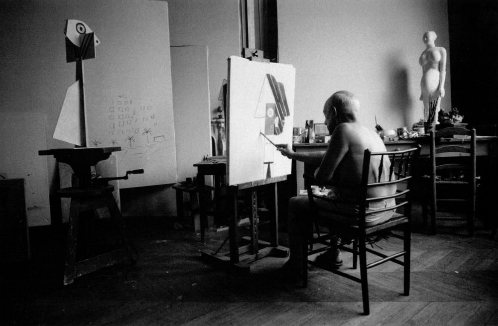
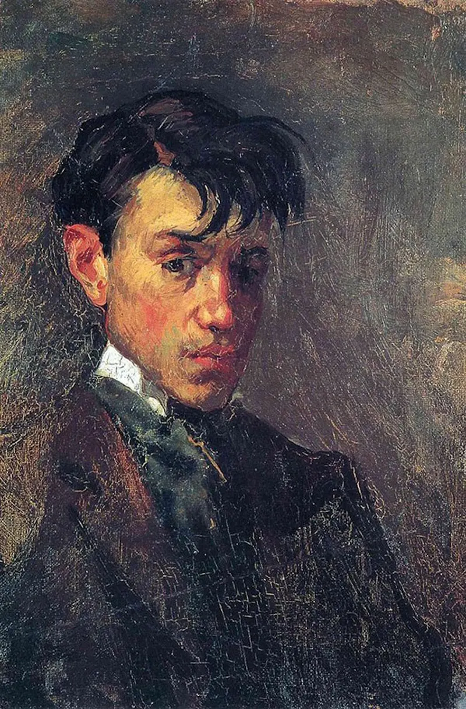
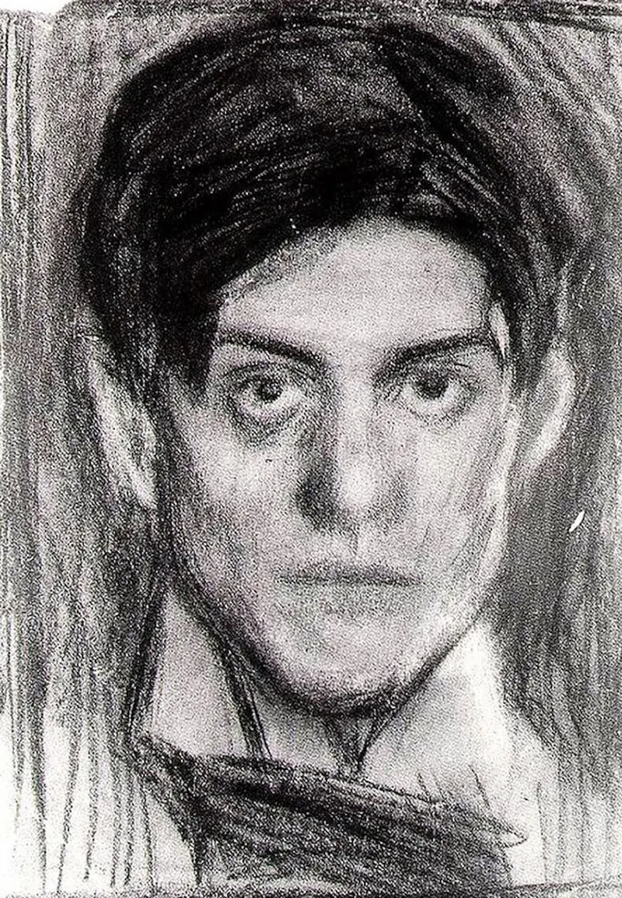
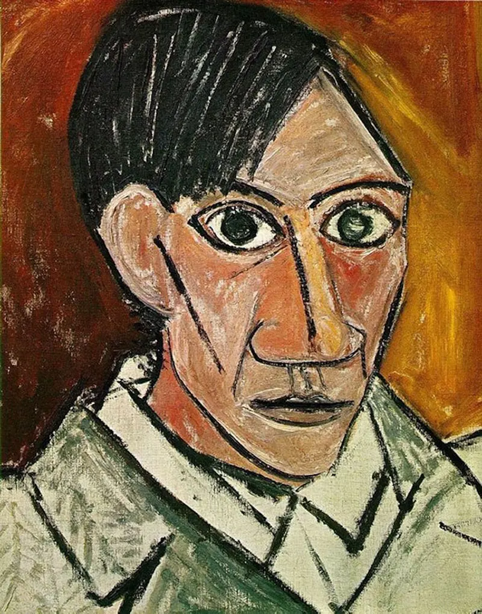
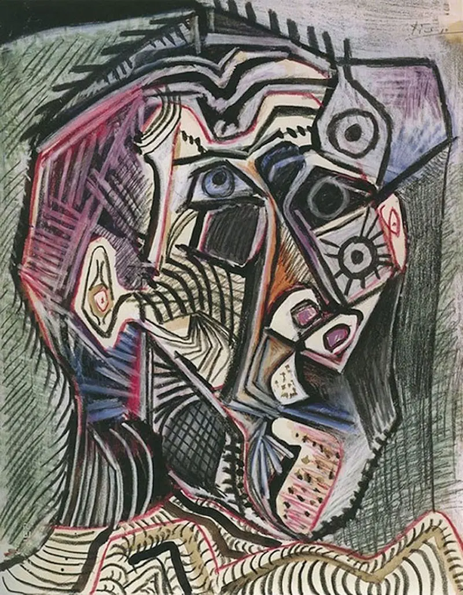

Over the years Picasso's self-portraits have evolved along with his Cubist style, finally reaching a great level of abstraction. He strove for a Platonic ideal, an essence without perspective. Do you think he managed to achieve this?

Picasso at 4 different stages




Picasso at 15years old.
Picasso at 18 years old.
Picasso at 25 years old.
Picasso at 90 years old.
Picasso:
“It took me four years to paint like Raphael, but a lifetime to paint like a child.”